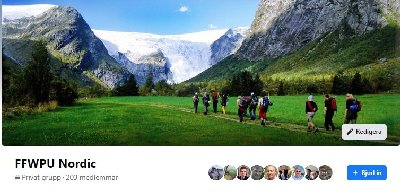

2015
"Tribal Messiahship"- stamMessias startade i full skala är 2015, först i Asien och spred sig sedan.
Världen: jan - Terrorn i Paris göder etniska motsättningar
Tio dagar har gått sedan terrorattacken i Paris och fortfarande pågår terrorjakten i Europa. På torsdagen slog
belgisk polis till mot terrorister i Verviers och två dödades. I Tyskland slog polis till mot en misstänkt
terrorcell på fredagen. Paris är fortfarande en delad stad där människor fruktar ökad antisemitism, islamofobi
och mer terrorism. Latifa Ibn Ziaten, vars muslimske son mördades av en islamist, säger i en exklusiv
SvD-intervju att "man måste ändå förlåta".
Principernas syn på Islam: (på engelska)
Mohammad in the Dispensation for Restoration
Världen: 24 mars Flygolycka i Alperna. 150 människor omkommer - när piloten avsiktligt begår självmord, genom att störta planet. (gottgörelse?)
10 maj
Sanna mors tal i Wien vid 50 års firandet av Enighetsrörelsen i Europa.
Googla för video
Svensk översättning pågår av den nya version av Sanne Fars samlade tal Cheon Seong Geong (v.2014)
23 apr ärkebiskop John Wikström Finland, tar emot biografin efter ett symposium i Karis
1 sept i Cheong Pyeong, Korea, publiceras boken Cham Bumo Gyeong på Koreanska, engelska (1647 sidor) och
japanska,
Nu finns trilogin av Heliga böckerna Cheon Seong Gyeong, Cham Bumo Gyeong och Pyeong Hwa Gyeong.

12 nov skapas fb-gruppen Nordic, av Lars Nedergaard i Danmark som ett nordiskt FFWPU-forum.
This Facebook group is meant to be a informal "grassroot" Facebook group for members or associates of "Family
Federation for World Peace and Unification" (FFWPU) living in or related to the Nordic countries.
2015 A Christian film "War Room" about marriage problems - spirit world - and value of prayer.